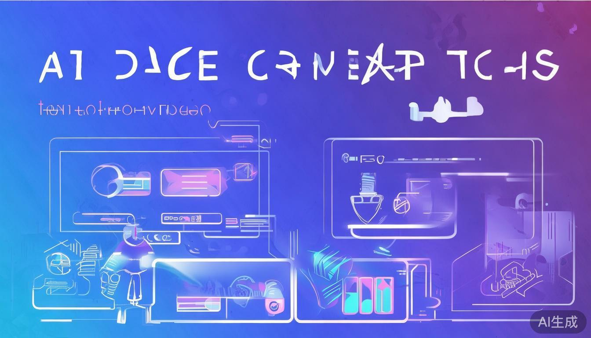

AI 视频制作实战：一个人做出一条视频
一年前，一个人拍一条像样的视频，意味着相机、灯光、演员、剪辑师和至少几天的工期。今天，你只需要一台电脑、几个 AI 工具和一个清晰的想法。这篇文章不讲玄学，只讲一条可以立刻复制的流水线：从脚本到成片，一个人也能做出一条能看的视频。
一、AI 视频能做什么
在动手之前，先搞清楚 AI 视频能帮你解决哪类问题。它不是来取代导演的，而是来替你扛掉那些重复、昂贵、技术门槛高的脏活。把合适的工作交给 AI，你就能把精力集中在真正值钱的地方——创意和判断。换句话说，AI 视频的价值不在于它"能生成"，而在于它把"拍摄"这件原本需要设备和团队的事，压缩成了一个人在电脑前的几次点击。先想清楚你要的是哪种产出，再去选工具，才不会在花里胡哨的功能里迷路。
短视频与社媒内容
抖音、小红书、YouTube Shorts、TikTok 上，一条 15 到 60 秒的竖屏短片早已是流量主战场。过去这类内容需要拍摄、剪辑、配乐，现在你可以用文生视频直接生成画面，再用剪辑工具拼接。对于知识科普、情感语录、产品种草这类"画面服务于观点"的内容，AI 几乎是量身定制：你提供观点和脚本，画面交给模型。
广告与产品演示
很多中小商家没有预算拍 TVC，但又有强烈的视觉宣传需求。AI 视频可以低成本产出概念片、功能演示、节日海报动态版。快手旗下的可灵（Kling）官方介绍就提到，其支持图生视频、视频续写与运动笔刷，并具备物理模拟能力，适合把一张产品图变成会动的广告。字节跳动的即梦（Dreamina）也把"一句话生成动态海报"作为核心卖点。
影视预演与 AIGC 短剧
Runway 在 Gen-4 中主推"参考图一致性"——用同一张角色参考图，让人物在多个场景里保持同一张脸、同一套衣服。配合即梦、可灵这类平台，已经有团队做出完整的 AIGC 短剧，比如即梦作为技术支持的科幻短剧《三星堆：未来启示录》。AI 在这里扮演的是"预演"和"分镜动画"的角色，先把创意跑通，再决定是否投入实拍。
- 社媒日常更新：高频、低成本，用文生视频快速出图补位；
- 品牌广告：用图生视频让产品图"活"起来，做轻量动态宣发；
- 影视预演：用一致性工具搭出可讲清楚的故事板，降低试错成本；
- 教育与课程：把抽象概念变成动态演示，提升理解效率。
二、文生视频 vs 图生视频

这是所有 AI 视频工具的两大根基。理解它们的差异，你才知道什么时候该打字、什么时候该先出图。几乎所有主流产品——可灵、即梦、Runway、Sora、Pika、Luma——都同时支持这两种入口，只是侧重点不同。
文生视频（Text-to-Video）是你输入一段文字，模型凭空生成画面。它的上限高、自由度大，但可控性差——同一个提示词跑三次，可能三次都不一样。图生视频（Image-to-Video）是你先给一张图，模型让这张图动起来、延伸出镜头。它的好处是"起点可控"：人物的长相、画面的构图、产品的样子，你先在图片阶段定死，再去生成视频，稳定得多。
一句话记住：想"凭空造梦"用文生视频，想"让已有的东西动起来"用图生视频。新手做产品、做角色，优先图生视频，可控性高出一个量级。
什么时候用文生视频
- 你还没有任何素材，只想快速看一个创意长什么样；
- 做抽象、氛围、风景、概念类画面；
- 需要大量不同镜头做挑选和灵感发散。
什么时候用图生视频
- 你有明确的产品、人物或场景参考图；
- 需要角色或品牌在多个镜头里保持一致；
- 要把一张静态海报、插画变成动态短片。
三、主流工具横评
2024 到 2025 是 AI 视频工具集中爆发的两年。下面这张表把目前最常被创作者提到的六款工具放在一起比一比。数据来自各产品官方发布与公开报道，发布时间、时长上限均可核实，建议结合官网最新说明使用。
| 工具 | 出品方 | 首发时间 | 单次最长 | 核心特点 | 适合谁 |
|---|---|---|---|---|---|
| 可灵 Kling | 快手 | 2024 年 6 月 | 最长约 2 分钟（1080p） | 类 Sora 的 DiT 架构、物理模拟、首尾帧控制、运动笔刷 | 中文创作者、长视频、产品广告 |
| 即梦 Dreamina | 字节跳动（剪映） | 2024 年 5 月更名 | 约 10–15 秒 | 文/图生视频、首尾帧、运镜、对口型、与剪映抖音打通 | 抖音生态、短剧、社媒 |
| Runway Gen-3/Gen-4 | Runway（美国） | Gen-3 2024-06 / Gen-4 2025-03 | 约 10 秒 | 运动笔刷、相机控制、参考图一致性（Gen-4） | 专业预演、影视感 |
| Sora | OpenAI | 2024 年 12 月公测 | 约 20 秒（最高 1080p） | 扩散 Transformer、长镜头、复杂场景 | 高品质叙事、概念片 |
| Pika | Pika Labs（美国） | Pika 1.0 约 2023 末/2024 初 | 约 10 秒（2.2 版 1080p） | Pikaswaps 局部替换、Pikaffects 特效、图生视频 | 趣味特效、社媒爆款 |
| Luma Dream Machine | Luma Labs（美国） | 2024 年 6 月 | 约 5 秒 | 生成快、镜头运动自然、免费额度友好 | 快速迭代、灵感草稿 |
没有"最好"的工具，只有"最合适"的组合。多数个人创作者的做法是：用可灵或可图/即梦先把画面和角色定下来，再用 Runway 或 Pika 做镜头运动和特效，最后进剪映或 Premiere 收尾。工具是积木，人是搭积木的那个。另外，免费额度与价格是另一道门槛：Luma 与可灵都提供免费额度让用户试水，Runway、Sora 则更偏订阅制。新手建议先用免费额度把整条流程跑通，确认自己真的能产出满意成片，再考虑付费扩产，避免一上来就被账单劝退。
四、一条视频的生产流水线
下面是一条真人可落地的流水线。以"一条 60 秒的 AI 科普短视频"为例，把六个环节拆开讲。关键不是每个工具多厉害，而是环节之间怎么衔接、怎么少返工。
1. 脚本：先写"一句话说清"
别一上来就打字生成视频。先用 200 字把你要讲的东西写清楚：开头钩子、中间信息、结尾行动号召。脚本决定了视频的骨架，也决定了后面每个镜头要生成什么。可以让大模型帮你扩写分镜脚本，但核心观点必须你自己定——AI 负责把话说漂亮，你负责说对话。
2. 分镜：把文字翻译成画面
把脚本拆成 6 到 10 个镜头，每个镜头写一句"画面描述 + 镜头运动 + 时长"。例如："镜头 1，近景，一只猫坐在窗台，缓慢推近，3 秒"。分镜越具体，生成时踩坑越少。即梦的智能画布、可灵的灵动画布都内置了这类分镜与故事板工具，可以直接在平台上沉淀你的创意。
3. 生图：把关键帧先画出来
对图生视频来说，这一步是关键。用 Midjourney、可图（Kolors）、即梦生图或 Stable Diffusion 把每个镜头的关键帧画出来。先用图片定好人物长相、服装、场景风格，后面视频才不会"变脸"。如果做角色连续剧，记得把同一张角色参考图反复喂给模型，保证跨镜头一致。
4. 生视频：让画面动起来
把关键帧图上传到可灵、即梦或 Runway，配上动作提示词和运镜参数生成视频。这里最考验耐心：同一个镜头常要跑 3 到 5 次，挑运动最自然的一条。注意时长拼接——单次通常只有 5 到 10 秒，长视频要靠"视频延长"或分镜拼接凑出来。可灵官方就强调了其"视频续写"能力，可把短片段延展成更连贯的内容。
5. 配音：声音决定质感
画面到位后，声音是第二道门槛。可用 ElevenLabs、剪映/即梦的"对口型"、以及各平台的 TTS 生成旁白。Pika 早在 2024 年 2 月就接入了 Lip Sync 口型同步（由 ElevenLabs 提供技术支持），可灵也支持口型同步功能。旁白要自然，建议先写逐字稿再合成，避免机器腔破坏观感。
6. 剪辑：把碎片缝成一条
把生成好的视频片段、配音、字幕、BGM 导入剪映或 Premiere，做节奏对齐、转场和调色。AI 生成的片段往往时长不齐、首尾不接，剪辑阶段就是"遮瑕"和"提气"。最后导出竖屏 1080×1920 或横屏 1920×1080，按需发布。即梦生成的素材还能直接跳转剪映二次剪辑，省去导入导出的摩擦。
五、变现与发布
做出来只是第一步，让内容被看见、产生价值才是目的。AI 降低了制作门槛，但没降低"被看见"的难度——好内容依然需要选题、节奏和持续更新。平台的选择也有讲究：竖屏短视频优先抖音、小红书、TikTok；横屏长内容优先 B站、YouTube。先用一个平台打透、跑出反馈，再横向铺开，比四处撒网更高效。把工具用透、把流程跑顺，一个人做出一条能看、能发、能赚的视频，已经不是梦想，而是今天就能开始的事。
- 平台分成：YouTube、B站、抖音都有创作者分成，AI 内容只要原创、合规即可参与；
- 商单与种草：在小红书、抖音接品牌合作，用 AI 做低成本 demo 样片；
- 模板与素材：把 prompt、分镜模板打包售卖，或做 AI 视频教学课程；
- 私域与带货：用 AI 短视频为公众号、店铺引流，沉淀自有粉丝；
- 参赛与基金：即梦、可灵等平台常办 AIGC 创作大赛，奖金与曝光都相当可观。
提醒一句：各平台对 AI 生成内容的标识要求不一，发布前看清规则，给视频打上"AI 生成"标签既是合规，也是诚信。守住这条底线，工具越强，你走得越稳。
资料来源
- OpenAI 官方技术报告《Video generation models as world simulators》（2024）· openai.com/research/video-generation-models-as-world-simulators
- OpenAI 发布 Sora 公测报道（CGTN 转引 Reuters，2024-12-10）· news.cgtn.com/news/2024-12-10
- 快手可灵 AI 官方产品介绍与发布里程碑（2024）· klingai.kuaishou.com / klingai.com
- 字节跳动即梦 AI 视频模型 Seaweed/PixelDance 上线报道（新浪财经，2024-11-15）· finance.sina.com.cn
- Runway Gen-3 / Gen-4 官方与评测资料（aiwiki.ai、InfoQ、skywork.ai，2024–2025）· runwayml.com
- Pika 官方产品页与 Pika 1.0 功能介绍（2024）· pika.art
- Luma Dream Machine 官方发布与百科资料（Wikiwand、百度百科、MarkTechPost，2024）· lumalabs.ai/dream-machine
出处声明：本页内容为白驹全局大脑原创，或已标注引用来源；改编内容遵循原始项目许可证（如 MIT / CC），不侵犯原作者权益。若引用内容涉及版权问题，请联系我们更正。